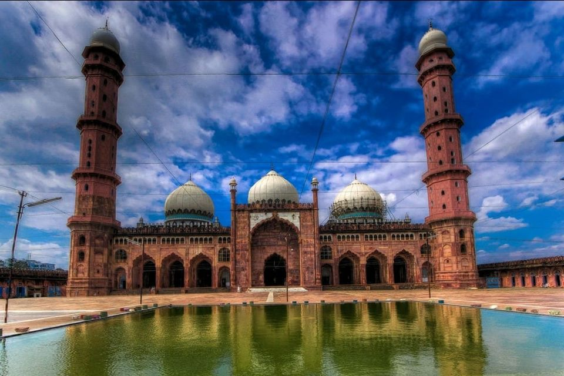
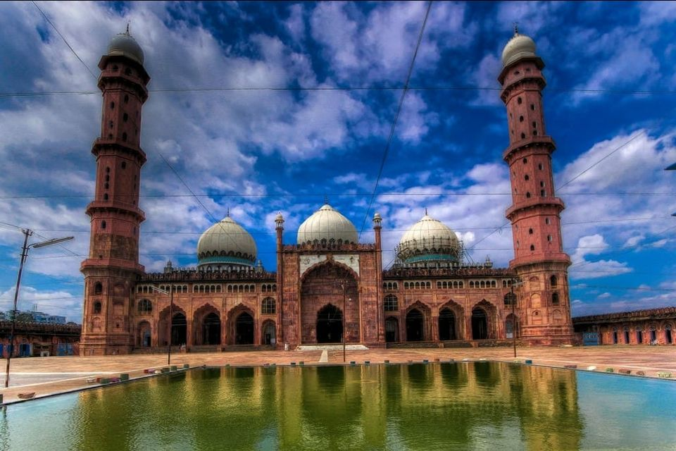

Bhopal
Bhopal, the capital, features historical sites like Taj-ul-Masajid, Shaukat Mahal, and Upper Lake. The city has a blend of Islamic and Hindu architecture.

Bhopal, the capital, features historical sites like Taj-ul-Masajid, Shaukat Mahal, and Upper Lake. The city has a blend of Islamic and Hindu architecture.

Gwalior is known for its historic fort, Gwalior Fort, and the beautiful Jai Vilas Palace. The city has a rich cultural and architectural heritage.


Khajuraho is famous for its group of stunning temples, known for their intricate erotic sculptures. These UNESCO World Heritage Sites showcase medieval Indian art.